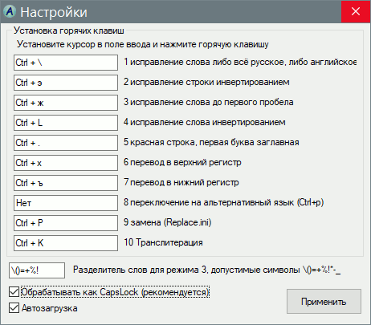

AutoIt3
TextCorrection
Назначение
Исправляет текст набранный в неверной раскладке клавиатуры.

Взаимосвязанные
TextCorrection (Linux)| панельная vyjuj'nf;rf | до обработки |
| панельная vyjuj'nf;ка | после обработки |
| панельная многоэтажка | после обработки, если текст был выделен |
| панельная vyjuj'nf;rf | до обработки |
| gfytkmyfz многоэтажка | после обработки |
| панельная vyjuj'nf;rf | до обработки |
| панельная многоэтажка | после обработки |
| приdtn | до обработки |
| ghbвет | после обработки |
| пРИВЕТ | до обработки |
| Привет | после обработки |
| привет | до обработки |
| ПРИВЕТ | после обработки |
| ПРИВЕТ | до обработки |
| привет | после обработки |
| Жаждущая | до обработки |
| ZHazhdushcaya | после обработки |